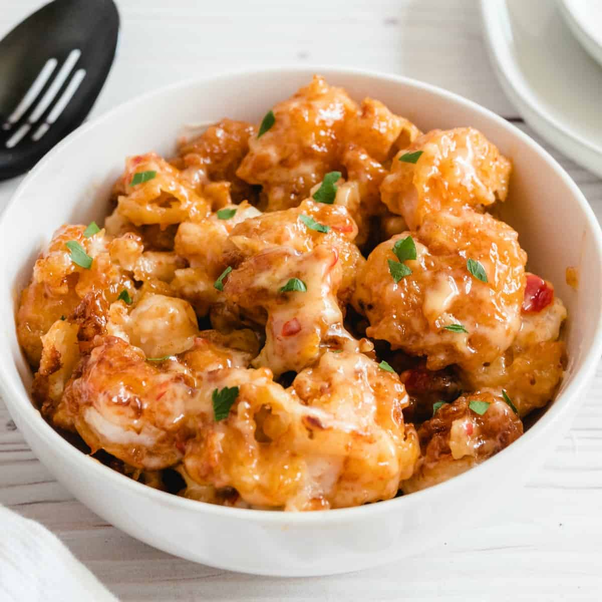

Bang Bang Shrimp

Bang Bang Shrimp. A delicious dish that is easy to prepare.
Ingredients
- 1/2-1lb large peeled and deveined shrimp
- 1/2 cup mayo
1/4 cup sriracha
- 1/4 cup sweet thai chili sauce
- 1-2 tsp soy sauce
- 1.5-2 cups corn starch
- 2 beaten eggs and 2 tbsp heavy cream or half/half
- Season corn starch to taste with salt, pepper, onion powder.
Steps
- Begin by defrosting your shrimp if you're using frozen.
- Once the shrimp are defrosted, go ahead and soak them in your buttermilk for a few minutes.
- While your shrimp are soaking, prepare your corn starch. Season the breading mixture to taste.
- Ensure that the flavor in the corn starch seasoning is well balanced to your preference of salt/spice, etc
- Next, it's time to make your sauce. Mix together 1/2 cup of mayo, 1/4 cup sriracha, and 1/4 cup sweet chili.
- Taste and adjust spice level by tweaking the amount of sriracha vs sweet chili you decide to use.
- Then add 1tsp of soy sauce and mix thoroughly.
- Next, prepare a plate or wire rack, and begin to bread your shrimp. Ensure that they are all evenly coated, and place them on the plate to rest while you prepare your oil for frying.
- Fill your pan up to about 1/2 inch worth of cooking oil. (high smoke point oil like peanut or vegetable). Carefully place your shrimp into the 350 degree oil and cook for 1.5-2 minutes per side.
- Flip and cook an additional 2 minutes or so. Carefully move the shrimp around in the oil regularly, to make sure that they do not stick to each other or to the bottom of the pan.
- Once the shrimp are golden brown and cooked through, remove them to a plate.
- Add your shrimp to the sauce and coat. Garnish with diced green onion, and enjoy your new favorite appetizer